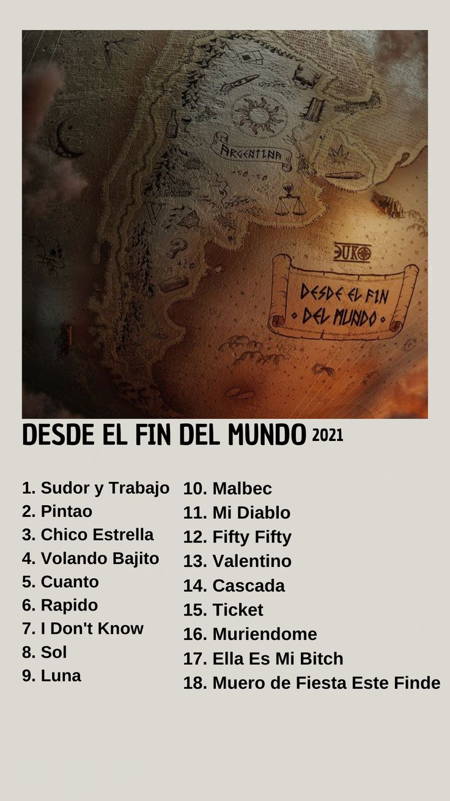

Desde el Fin del Mundo.
 El 22 de abril de 2021, Duki lanzó “Desde el Fin del Mundo”, un disco que no solo representó un hito en su carrera, sino que también transformó por completo el panorama de la música urbana en Argentina. Hasta entonces, el trap había tenido momentos de explosión —especialmente desde 2017 con la ola de artistas emergentes como él, YSY A, Neo Pistea, Khea o Cazzu—, pero este álbum fue el primero en consolidar esa escena dentro de una propuesta sólida, internacional y conceptual, sin perder identidad local.“Desde el Fin del Mundo” mostró a un Duki distinto: más introspectivo, más enfocado en la producción y en la construcción de un mensaje. El disco dejó atrás la etapa de canciones sueltas y virales para presentar un trabajo cohesionado, donde cada track tenía un lugar y una intención. Se alejó del trap más callejero y explosivo para explorar sonidos más oscuros, melódicos y atmosféricos, con una fuerte influencia del cloud rap, el trap alternativo y hasta el rock argentino. Líricamente, fue su proyecto más íntimo hasta ese momento. Duki habla de su infancia, la ansiedad, las adicciones, el amor, la fama, el ego y la lucha interna. Por primera vez, muchos lo escucharon no solo como una estrella del género, sino como un verdadero autor, con visión artística.